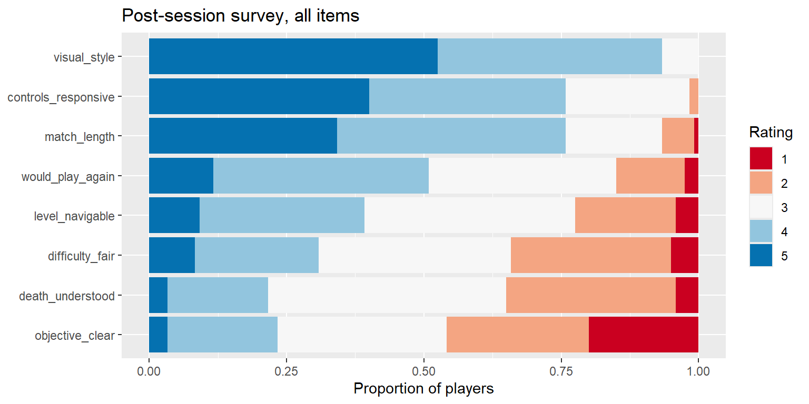

flowchart LR W["What"] --> P["Pattern"] P --> M["Meaning"] M --> A(["Action"]) A -.->|"next playtest"| W class M accent class A action
Interpreting and Reporting Evidence
From a set of results to a finding someone can act on
A playtest ends in a decision, and the report is the only part of your work the decision-maker will read. This page is about turning results into that report: what goes under each heading of the assessment report, writing each finding as What → Pattern → Meaning → Action, ranking findings so the most important one leads, and building the report in Quarto so its numbers cannot go stale. The playtest question running through it: “Build B was meant to be better. What do we tell the team?”
Stage: 4 · Core. Taught in the March workshop. Time: 30 minutes, then the workshop lab on your own data. Before this: everything from Stages 1–3, and Combining Evidence for the qualitative part. Key terms: assessment report headings, Nine-Part Evidence Workflow, What → Pattern → Meaning → Action, severity, limitation, inline R. R you will write: inline `r ` code, chunk options echo and fig-cap; pivot_longer() if your survey is wide.
Learning Outcomes
By the end of these notes you can:
- say what goes under each heading of the assessment report, and map each part of your analysis onto one;
- write a finding as What → Pattern → Meaning → Action, and diagnose a finding that skips a step;
- rank findings by severity, frequency, evidence and actionability, so the report leads with the one that matters most;
- build the report in Quarto with every number computed, so it cannot quote a stale number;
- reshape a wide survey with
pivot_longer()when you need to report every item.
Why This Matters for Playtesting
A playtest ends in a decision: keep the change, cut it, or test again. The person making that decision will not rerun your analysis. They will read the report, and the report is the only part of your work that reaches them.
A report is an argument, not a results dump. Every table and figure you include should move the reader towards the conclusion or warn them off it. A reader faced with forty numbers will pick the one they already believed.
The reader must be able to check you. A report that says what was measured, how the data was cleaned, what was tested and what was not, lets a sceptical producer find the weak point themselves. That is what makes the conclusion trustworthy, and it is why limitations are not optional.
The Report Headings
Your final assessment report has these headings, in this order. Every report skeleton on this site uses them.
| Heading | What goes in it | In the Tidebreak report |
|---|---|---|
| 1. Executive Summary | The question, the one or two findings that matter, and what the team should do. Written last, read first | Build B’s guidance cut wrong turns without costing enjoyment; keep it, and fix the Corridor hitch |
| 2. Introduction | The game, the design problem and the research question | Players were getting lost and quitting; did Build B’s guidance help? |
| 3. Methodology | Who played what, what was measured, how the data was cleaned | 120 sessions from 30 players, each on one build; telemetry, survey, comments; the cleaning log |
| 4. Results | The evidence: descriptive, visual, statistical and qualitative, without interpretation | Wrong turns by build, with its figure, interval and p-value; the survey items; the comment codes |
| 5. Discussion | What the results mean for the player: practical significance, where the evidence agrees and disagrees, limitations | Is the reduction big enough to matter? Why do comments disagree with telemetry? What could make this wrong? |
| 6. Conclusion | The decisions and the next test, following from the Discussion | Keep the guidance; add an on-screen objective and retest |
| 7. References | Anything you cite: questionnaires, methods, sources | The questionnaire your survey items came from |
| 8. Appendices | The detail a checker needs but a reader does not: the cleaning log, the codebook, extra tables | Cleaning log; comment codebook; every survey item |
Results reports; Discussion judges. Keep them apart. A reader should be able to disagree with your Discussion while agreeing with every number in your Results.
Write the Executive Summary last. It is the only section some readers will read, so it must stand on its own: question, finding, action, in a few sentences.
The Nine-Part Evidence Workflow
Earlier versions of these notes organised a report as nine parts. They are still a useful checklist for whether your analysis is complete, but they are not the report structure. Each part belongs under one of the assessment headings:
| Evidence workflow | Report section |
|---|---|
| 1 Research question | Introduction |
| 2 Experimental design | Methodology |
| 3 Descriptive evidence | Results |
| 4 Visual evidence | Results |
| 5 Statistical evidence | Results |
| 6 Practical significance | Discussion |
| 7 Qualitative evidence | Results / Discussion |
| 8 Limitations | Discussion |
| 9 Design conclusion | Conclusion |
Use it as a check, not as headings. Before you submit, tick off all nine: if one is missing, a section of the report is thin.
Qualitative evidence sits in two places. The codes and their counts are Results. What they mean, and how they agree or disagree with the telemetry, is Discussion. Combining Evidence shows how.
What → Pattern → Meaning → Action
Every finding in the report is written in four moves:
| Move | Says | Test |
|---|---|---|
| What | What was measured, on whom, how many | Could a reader repeat the measurement? |
| Pattern | What the data shows, with its size | Is there a number, and is it the right one? |
| Meaning | What that suggests about the game, and how sure you are | Does it follow from the pattern, and no further? |
| Action | The one change or test you recommend | Could someone start work on it tomorrow? |
Meaning is where findings go wrong. What and Pattern are facts. Action is a recommendation. Meaning is the step where you connect them, and it is the step most often skipped, overstated or quietly replaced by what you hoped to find. A finding that does not name an action is not finished (rule 10); a finding whose action does not follow from its meaning is worse.
How it maps onto the report. What goes in Methodology, Pattern in Results, Meaning in Discussion, Action in Conclusion. For a comparison between builds, the Pattern is the six questions from Comparing Groups: what happened, how large, how uncertain, could it be chance.
Ranking Findings
A playtest rarely produces one finding. Tidebreak produced at least five, and a report that lists them in the order they were found buries the one that matters. Rank them, and lead with the top one.
Rate each finding on four things:
- Severity: how badly it hurts the player experience when it happens.
- Frequency: how many players it affects.
- Evidence: how strong and how consistent the evidence is.
- Actionability: whether the team can do something about it, and what.
A common severity scale, adapted from usability testing, runs from 4 down to 0:
| Severity | Meaning |
|---|---|
| 4 Critical | Stops play or makes players quit |
| 3 Major | Hurts the experience for many players, but they carry on |
| 2 Minor | A noticeable irritation |
| 1 Cosmetic | Fix if there is time |
| 0 None | Not a problem |
Applied to Tidebreak:
| Finding | Severity | Frequency | Evidence | Action |
|---|---|---|---|---|
| Build A frustration quits | 4 | 20 of 60 Build A sessions, against 5 in Build B | Strong: p = 0.002, and Build B already fixes it | Keep Build B’s guidance. Lead the report |
| Build B Corridor hitch | 3 | 60 frames over the 30 FPS budget, every one in the Corridor | Strong: a fixed interval, reproducible | Engineering ticket now |
| Objective unclear | 3 | 46% of responses disagreed; better in Build B | Strong for the build difference; suggestive for the link to quits | Design change and retest |
| Build B rated harder | 1 | 0.42 points on a 1–7 scale | Weak: deaths did not change | Monitor in the next test |
| Visual style | 0 | 93% agreed | Strong, but nothing to fix | Mention; do not lead with it |
Severity is a judgement; write down why. Two analysts may rate the Corridor hitch differently. What matters is that the reasons are visible, so the team can argue about the rating rather than about which finding the analyst happened to like.
For your project: list every finding your team has, rate each, and put the table in an appendix. The top one or two go in the Executive Summary.
Worked Examples
The data. The 120 post-session surveys, joined to the session outcomes, feed both examples below. Every number in both is correct.
A good finding
What. 120 players each rated eight statements about their session from 1 (strongly disagree) to 5 (strongly agree).
Pattern. “I always knew what my objective was” was the lowest-rated of the eight, averaging 2.61, with 46% disagreeing. It split sharply by build: 2.13 in Build A against 3.08 in Build B. Players who quit in frustration rated it 1.24, against 2.97 for everyone else.
Meaning. Build B’s guidance made the objective clearer. The playtest was designed to compare the two builds, so this is the comparison it can best support. The link to frustration quits is an association: players who did not know what to do were the ones who left, which is consistent with unclear objectives causing the quits but does not prove it.
Action. Keep Build B’s guidance. For the next build, add an explicit on-screen objective in the first minute, and retest with objective clarity and the frustration-quit rate as the two target measures, with the success threshold agreed before the test.
Why it works. The What says who and how many. The Pattern gives the size and the comparison, not only the ranking. The Meaning separates the claim the design supports (the build changed clarity) from the one it only suggests (clarity drives quits). The Action is specific, testable, and follows from the Meaning.
A bad finding
Players loved Tidebreak: visual style scored 4.46 out of 5, with 93% agreeing. Build B scored higher than Build A on 5 of the 8 survey items. Overall the playtest was a success, and the team should continue as planned.
Why it fails. Every number is true, and the finding is still useless.
- What is missing. Who answered, how many, and on what scale.
- The Pattern is chosen, not found. It leads with the best-rated item, which differs between the builds by 0.02 of a point. “Higher on 5 of 8” counts that as a win, the same as the objective item’s gap of 0.95.
- The Meaning is a verdict. “A success” measured against what? Nothing in the question was about visual style.
- The Action names nothing. “Continue as planned” is not a decision anyone can start work on (rule 10).
- It misses the finding. The worst-rated item, the one tied to why players quit, is not mentioned. The bad version is not a weaker account of the good one. It is an account of a different, more comfortable playtest.
An Annotated Report
What a finished report looks like, in miniature, under the assessment headings. Each section is a sentence or two here; in your report each is a section. The notes in grey say why each part is written the way it is.
Building the Report in Quarto
Your report is a .qmd file: prose, code and output in one document, rendered to HTML with quarto render report.qmd. The skeleton is the assessment headings:
---
title: "Tidebreak Build B: Playtest Report"
---
```{r}
#| echo: false
library(readr)
library(dplyr)
library(ggplot2)
sessions <- read_csv("data/tidebreak_sessions.csv", show_col_types = FALSE)
```
## Executive Summary
## Introduction
## Methodology
We analysed `r nrow(sessions)` sessions from
`r length(unique(sessions$player_id))` players.
## Results
## Discussion
## Conclusion
## References
## AppendicesInline code keeps the prose honest. `r nrow(sessions)` in the text is replaced by the number when the report renders. When next week’s data arrives, you render again and every figure, table and sentence updates together. A number typed by hand into the prose is the one that will be wrong. Every page of this site is built this way.
echo: false hides a chunk’s code but keeps its output: the reader sees the table or figure without the R that made it. Use it for the report; leave the code visible in your own working file.
fig-cap gives a figure a numbered caption. State the takeaway in it, as in A Figure for Your Report.
A Quarto document in one page
A Quarto document is a text file with three kinds of content:
---
title: "Build B playtest report"
---
## Session length
Build B sessions were longer. The median was `r median(b$session_minutes)` minutes.
```{r}
#| label: session-hist
hist(b$session_minutes)
```The header between the --- lines sets the title and options. Prose is written in Markdown: ## for a heading, **bold**, *italic*, - for a list. Code chunks start with ```{r} and end with ```; lines starting #| are chunk options, such as a label or whether to show the code.
Rendering runs every chunk from the top, in order, in a fresh session, and writes the web page: the Render button in either editor, or quarto render in a terminal. Because it starts fresh, a document that renders proves the analysis works from the data alone, not from something you happened to type in the console earlier.
For your project: start report.qmd now, with the eight headings and a setup chunk that loads your data, and render it while it is empty. Every finding you add from now on goes straight into it.
Reporting a Whole Survey
A survey tool exports one row per respondent and one column per question, because that is how a form is filled in. That shape is wide. The Tidebreak survey has 120 rows and 9 columns: a session ID and eight agreement items, each rated 1 to 5.
To report every item at once you need it long: one row per answer, with columns session_id, item and rating (Tidy Data). pivot_longer(), from tidyr, does the reshape:
library(tidyr)
long <- survey |>
pivot_longer(-session_id, names_to = "item", values_to = "rating")
dim(long)[1] 960 3head(long, 3)# A tibble: 3 × 3
session_id item rating
<chr> <chr> <dbl>
1 S001 controls_responsive 3
2 S001 objective_clear 1
3 S001 difficulty_fair 3-session_id means “every column except session_id”. Those eight columns are stacked: their names go into item and their values into rating. 120 sessions × 8 items = 960 rows.
Now item is a column, so one group_by() summarises every item:
long |>
group_by(item) |>
summarise(mean = mean(rating),
agree = mean(rating >= 4),
disagree = mean(rating <= 2)) |>
arrange(mean)# A tibble: 8 × 4
item mean agree disagree
<chr> <dbl> <dbl> <dbl>
1 objective_clear 2.61 0.233 0.458
2 death_understood 2.86 0.217 0.35
3 difficulty_fair 3 0.308 0.342
4 level_navigable 3.22 0.392 0.225
5 would_play_again 3.45 0.508 0.15
6 match_length 4.03 0.758 0.0667
7 controls_responsive 4.14 0.758 0.0167
8 visual_style 4.46 0.933 0 For a rating scale, report the proportion agreeing and disagreeing alongside the mean; the mean of an ordinal scale is a convenience, not a measurement (rule 3). And item can go on an axis:
library(ggplot2)
long |>
ggplot(aes(y = reorder(item, rating), fill = factor(rating))) +
geom_bar(position = "fill") +
scale_fill_brewer(palette = "RdBu") +
labs(title = "Post-session survey, all items",
x = "Proportion of players", y = NULL, fill = "Rating")
reorder(item, rating) sorts the items by their mean rating, and position = "fill" stretches every bar to the same length.
Going further: pivot_wider(), the other kinds of join, and how to check a join did what you meant are on Reshaping and Joining.
Interpretation Guidance
What the data shows. The objective item is the worst-rated of eight and differs most between the builds. Wrong turns fell in Build B; enjoyment did not change.
What the analysis suggests. Build B’s guidance improved navigation and how clear the objective felt, at no cost to enjoyment.
What can legitimately be concluded. Build B made navigation better for the players who tested it. Whether the clearer objective is what reduced frustration quits is a hypothesis for the next test, not a finding.
Order the evidence by strength. In the Conclusion, lead with what the strongest evidence supports, and say in the Discussion where weaker evidence disagrees. A report that hides a contradiction invites the reader to find it.
Common Mistakes
Reporting results in the order you computed them. The reader needs the order of the argument. Use the headings.
Interpreting in the Results. “Wrong turns fell, showing the guidance works” mixes a result with a judgement. Results says the first half; Discussion says the second.
Using the nine-part workflow as headings. It is a checklist. The report has the assessment headings.
Leading with the best-rated item. It is usually the art, it rarely differs between builds, and it is almost never what the playtest was run to find.
An Action that is a sentiment. “Improve onboarding” is a wish. “Add an on-screen objective in the first minute and retest clarity” is an action.
A generic limitation. “The sample was small” tells the reader nothing. “Each player contributed four sessions, so sessions are not independent; the result holds when each player counts once” tells them what you checked.
Copying numbers into the prose by hand. They go stale the next time the data changes, and nobody notices until a meeting.
Practice
Each takes two or three minutes.
- Place it. Which report section does each of these belong in? (a) “Each player contributed four sessions.” (b) “Players took 3.4 fewer wrong turns in Build B.” (c) “A reduction of this size is large enough for players to notice.”
- “Keep the guidance and retest with an on-screen objective.”
- Diagnose. “Build B is better. Players liked it more and got lost less. We should ship it.” Which of What, Pattern, Meaning and Action is missing or weak?
- Rank. A colleague’s draft report leads with “93% of players liked the visual style”. Using the ranking table above, rewrite the report’s first sentence.
- Compute. Which survey item has the largest share of players answering 1 or 2 in Build A?
Summary
- The report has eight headings: Executive Summary, Introduction, Methodology, Results, Discussion, Conclusion, References, Appendices. Results reports; Discussion judges.
- The Nine-Part Evidence Workflow is a checklist that maps onto those headings, not a replacement for them.
- Write every finding as What → Pattern → Meaning → Action. Meaning is where findings go wrong; Action is where they become useful.
- Rank findings by severity, frequency, evidence and actionability, and lead with the top one.
- A report built in Quarto computes its own numbers, so it cannot quote a stale one.
- When you need every survey item,
pivot_longer()makes the survey long.
| Key term | Meaning |
|---|---|
| Executive Summary | The question, the findings that matter and the actions, written last and read first |
| Nine-Part Evidence Workflow | A checklist of the nine kinds of evidence a complete analysis covers |
| What → Pattern → Meaning → Action | The four moves of a finding |
| Severity | How badly a problem hurts the player experience, 0 to 4 |
| Limitation | Something that could make the conclusion wrong, stated by the author |
| Wide, long | One row per respondent, or one row per respondent per question |
Links
- Ten Rules: rule 2 (a number without a question attached is decoration) and rule 10 (a finding that does not name an action is not finished)
- Combining Evidence: telemetry, observation and self-report together, coding comments, limitations
- Cleaning and Transforming: the cleaning log for Methodology and the Appendices
- Comparing Groups: the six questions behind a Results paragraph
- R and Quarto Reference: Quarto
- Lab 05: From Evidence to Report
- Stage 4 demo
Reflective Questions
- The bad finding uses only true numbers. What, if anything, should stop a true number going into a report?
- A producer asks you to cut the limitations because they “undermine the recommendation”. What do you say?
- Write your own project’s Executive Summary now, in three sentences, before you have finished the analysis. What does that tell you about which analysis is still missing?
- Your Conclusion recommends a retest. What would you have to decide before that retest starts, so that its result can change your mind (rule 1)?